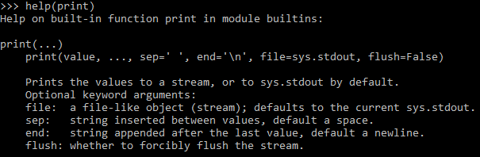

HOME BLOG EBOOKS ABOUT CONTACT SHOP
Python is a high level programming language developed by Guido Van Rossum. Python was mainly considered a “scripting language” for long time, however due to its simplicity the popularity of python has been soaring and its use is no longer restricted to scripting. These days python is used for everything from web designing, system admin work, visualization to even data science.
Python can be downloaded from Python.org. The latest version at the time of writing of this post is Python 3.9.0
In the words of the creator:
"My original motivation for creating Python was the perceived need for a higher level language in the Amoeba [Operating Systems] project. I realized that the development of system administration utilities in C was taking too long. Moreover, doing these things in the Bourne shell wouldn’t work for a variety of reasons. … So, there was a need for a language that would bridge the gap between C and the shell."
Although there are many environments in which you might run Python, Python is typically installed on your machine as a program that runs from the terminal or command shell. From the terminal, you should be able to type python like this:
C:\Users\BeyondWhy>py
Python 3.9.0 (tags/v3.9.0:9cf6752, Oct 5 2020, 15:34:40) [MSC v.1927 64 bit (AMD64)] on win32
Type "help", "copyright", "credits" or "license" for more information.
>>> print("hello world")
hello world
>>>
Using Python from the terminal is recommended because that is the Python’s native environment & if you are able to use Python here, you will be able to use it everywhere else.
Python’s interactive mode can be used as a calculator as shown:
>>> 2424-84.32+3131
5470.68
>>>
You can use the underscore (_) to use the result of the last calculation.
>>> _/100
54.7068
>>>
You can use the help() function to get the documentation of specified module, class, function, variables etc.
>>>help(print)
>>>

While copy pasting python code, take care to exclude ">>>" and copy only the code after it.